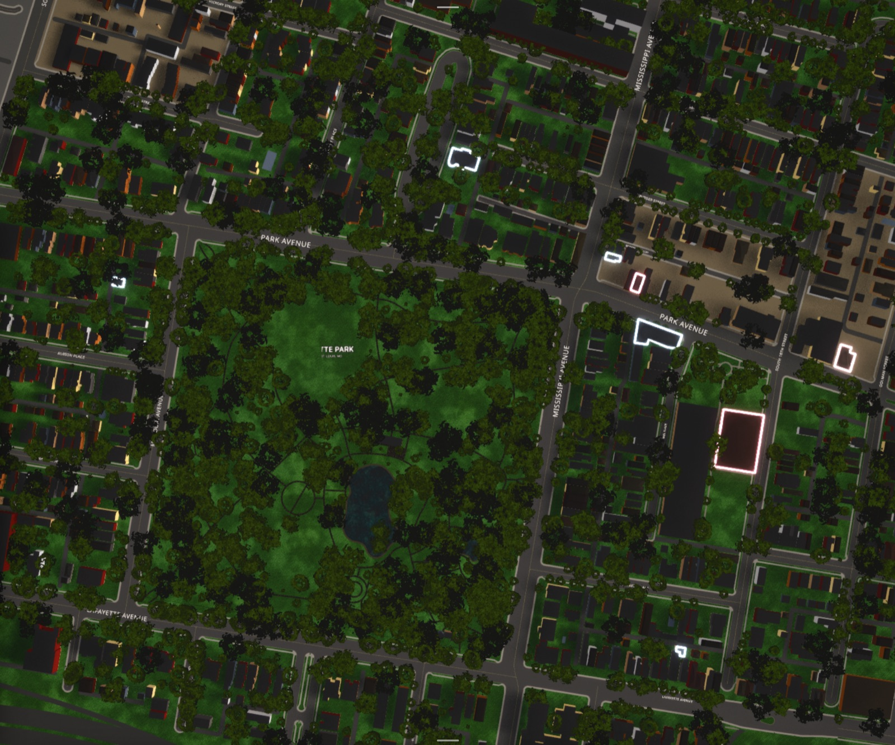

A community-building and neighborhood-fortification tool
The Ward begins with the character of a real neighborhood: its streets and buildings, its landscape and atmosphere, its businesses and institutions, and the people who live, work, visit, and care for it. It connects the physical character with the information and activities that make it a community, creating a shared civic space that belongs to the neighborhood itself.
The Sky
The Meteorologist connects the Ward to the weather overhead. Clouds, light, rain, snow and changing conditions become part of the neighborhood as they happen.
The Almanac
The Ward keeps the neighborhood’s own time and conditions: time, temperature, daylight, sunset and the moon.
The Trees
The Arborist reconstructs the neighborhood’s living landscape from public data. Where individual trees are known, it places them literally; where they aren’t, it uses canopy, species, and local planting data to determine what is likely to grow there.

The Whole Neighborhood is There
If it’s in the source data, it’s in the Ward. Homes, businesses, landmarks, and everything in between.
The Society Pages
An old-school neighborhood directory: businesses, institutions, public spaces, and other places, together and searchable.
You can always find out
who’s open late what’s happening tonight where the band is playing where to get dinner what’s open right now what your neighbors are giving away what’s happening this weekend where to get a drink who’s having a sale what’s going on at the park where the block party is what just opened who can lend a hand what your neighbors are talking about what’s happening down the street
The Ticker
What’s happening now, running across the map. Events, announcements, menus, and other timely information from around the Ward.
Neon
Open businesses light up on the map, color-coded by type. At a glance, you can see what’s open and where the neighborhood is active.
The Bulletin Board
The neighborhood commons: announcements, Buy Nothing, services, recommendations, requests, and whatever else neighbors need to put in front of one another.
Standing in the Ward
There are no accounts. The Ward recognizes your relationship to the neighborhood rather than asking for your identity. Townies can post, comment, rate local places, and participate in neighborhood life without providing a name or email.
Townie — you are aroundVisit the neighborhood on three different days within two weeks and your device becomes a Townie. It means you’re recognized as a local participant, whether you live there or simply keep turning up.
Resident — you live hereResidents are Townies recognized at their building, with access to the private spaces and functions reserved for their neighbors.
Guardian — you look after this placeGuardians are Townies entrusted with a Place. They can manage its information, photographs, hours, announcements, menus, and events directly.
Keyholder — you work hereA Guardian can give staff limited access to everyday tasks without giving them control of the Place. Keyholders can update only what they’ve been given access to — menus, hours, announcements, replies, etc.
Courier — you caryCouriers are Townies with an additional, verified credential. Because Cary entrusts them with businesses’ orders and brings them to people’s doors, the Ward verifies their identity and background before they can cary.
The Ward cannot produce a list of residents because it never collects the information required to make one. Identity is collected only where a function genuinely requires it.
The Civic Economy
Each Ward decides how — or whether — it makes money. Hosts can build around the Ticker, local commerce, services, or activate additional modules such as Cary.
Cary
Cary is the Ward’s optional neighborhood delivery service. Restaurants keep the full price of the food, and most of the delivery charge goes directly to the neighbor who carried it. The Ward keeps only a small amount to support the service.
Couriers choose when they’re available and which deliveries they accept. Nothing is assigned, declining costs nothing, and there are no acceptance rates or penalties.
Cary for your neighborhood
You start with a ZIP. You end with a neighborhood.
Global open datasets that cover everywhere and arrive on their own. The kit picks the right base for the region; the operator never makes the call.
Published by an institution — a national survey, a county assessor, a forestry department, a heritage register. Free; two are a genuine hunt for the right municipal portal.
No dataset holds any of this. You look, you ask, you walk around. A neighborhood is the only party that can supply it — which is why it sits at the top of the stack rather than the bottom.
Host Your Neighborhood’s Map
A Host is a partner rather than a customer, so every map starts with a conversation about the place, what it needs, and how we can work together to do right by it.